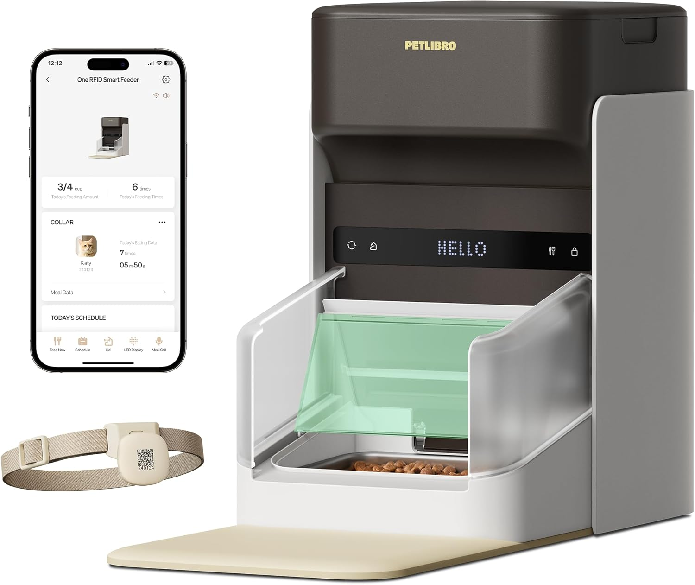
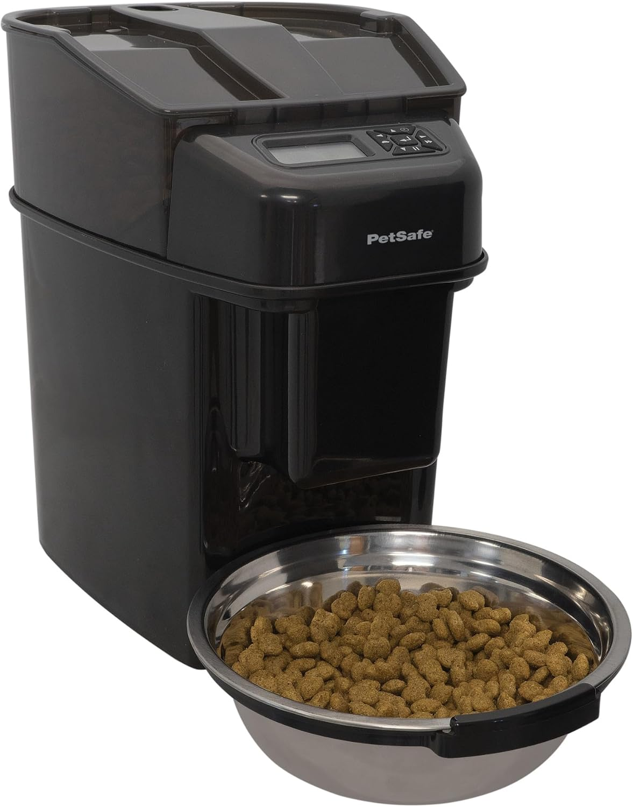
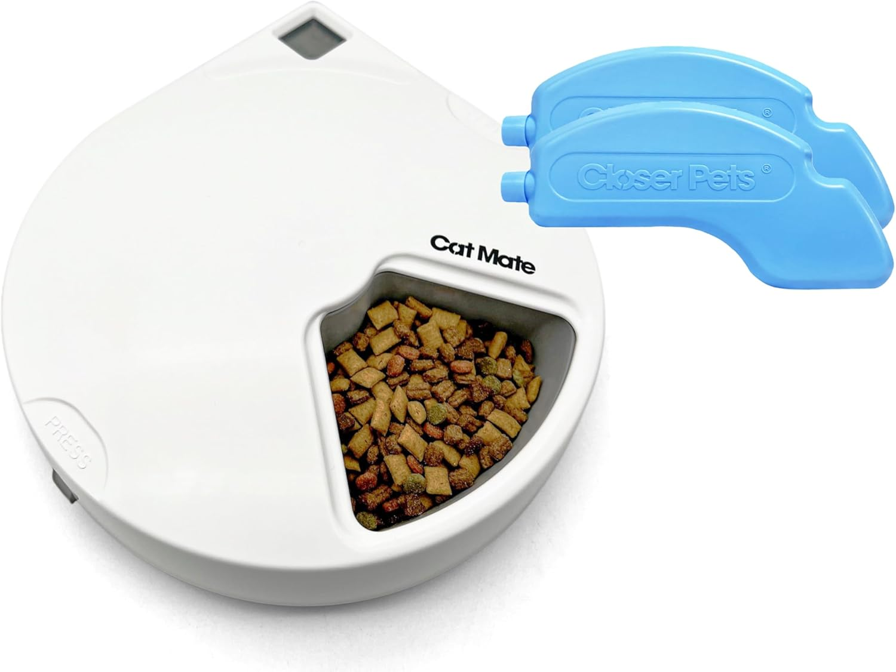
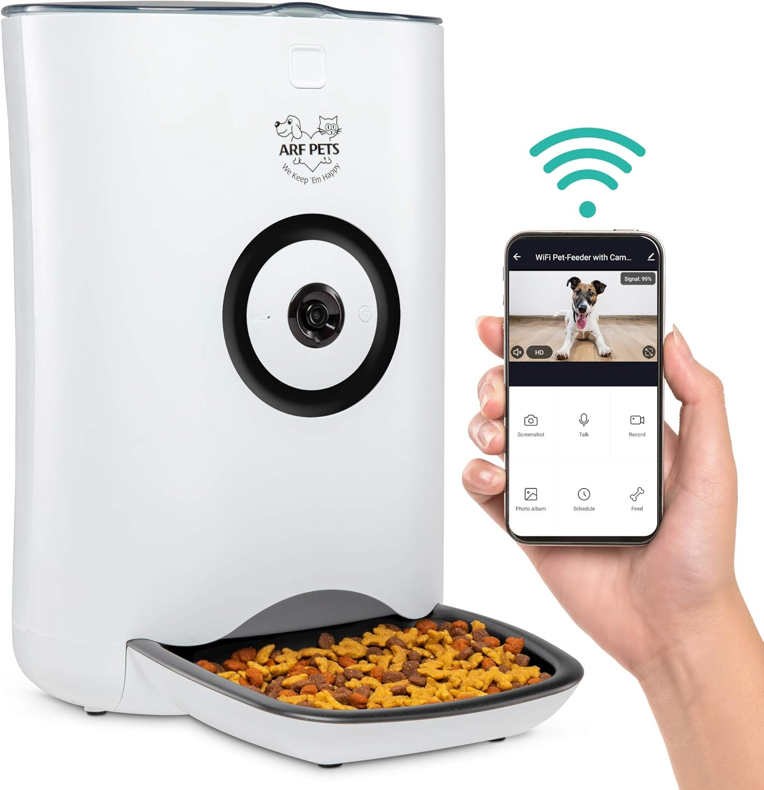
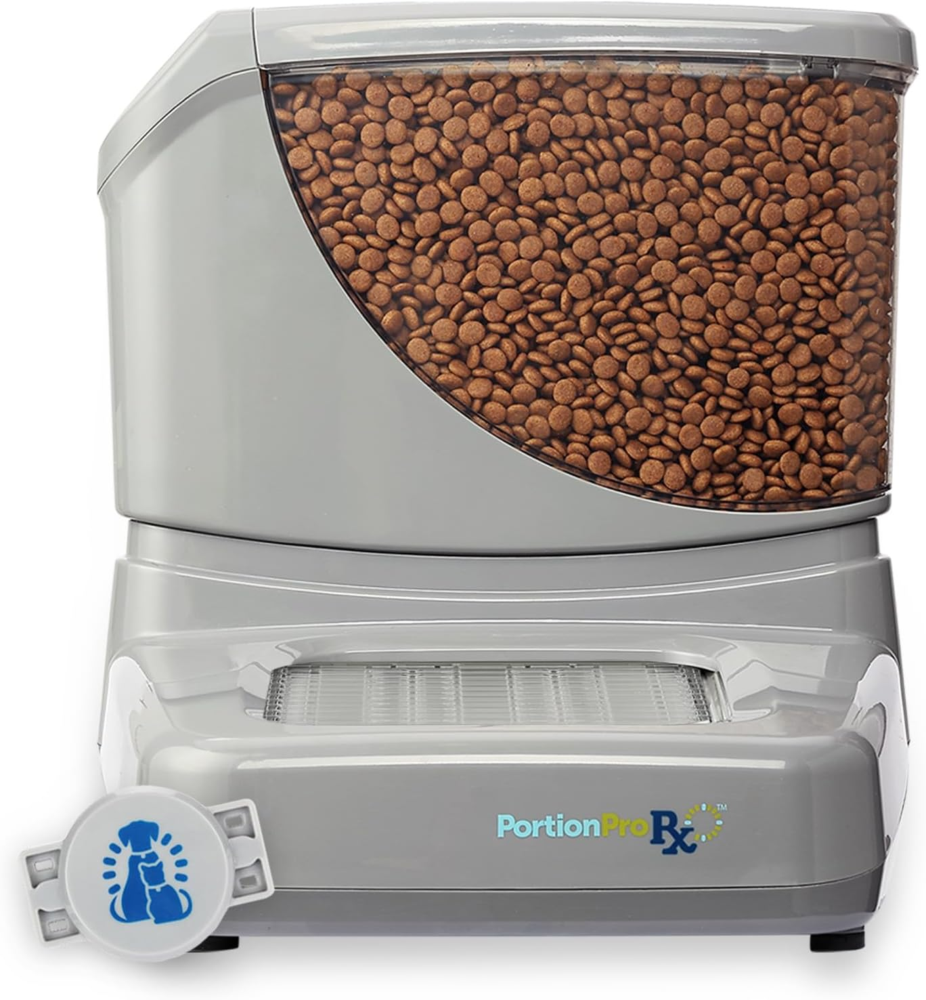

Best Automatic Pet Feeders 2025
Quick Picks for Busy Pet Parents
What's in This Guide
Automatic pet feeders can be game-changers for maintaining consistent feeding schedules, whether you're working late, traveling, or simply want to ensure your pet gets the right portions at the right times.
After analyzing customer reviews, testing reports, and veterinary recommendations, we've identified the key factors that separate reliable automatic feeders from gadgets that break down when you need them most.
How Automatic Pet Feeders Work
Understanding the different mechanisms helps you choose the right type for your pet's needs and your lifestyle.
Gravity vs Portion-Controlled Feeders
Gravity feeders continuously refill a bowl as food is eaten - simple but no portion control. Portion-controlled feeders dispense specific amounts at scheduled times, preventing overeating.
Programming Methods
- Manual buttons: Simple programming directly on the unit
- App control: Smartphone apps for remote scheduling and monitoring
- Voice recording: Play your voice during feeding time
- Camera integration: Monitor your pet's eating habits remotely
Top 5 Automatic Pet Feeders Compared
1. PETLIBRO Automatic Pet Feeder - Best Overall
This WiFi-enabled feeder offers reliable app control with precise portion measurement from 1-4 cups per meal. The user-friendly interface and dual power supply make it our top choice for most pet owners.
Pros
- Intuitive smartphone app
- Accurate portion control
- Feeding history tracking
- Battery backup prevents missed meals
- Voice recording feature
Cons
- Requires stable WiFi connection
- App can be slow to connect occasionally
- 4-pound capacity may need frequent refilling
Best For: Pet owners who want reliable smart features without premium pricing. Works well for single pets with consistent eating schedules.
Check Current Price on Amazon2. PetSafe Healthy Pet Simply Feed - Best Budget Option
A no-frills automatic feeder that focuses on doing one thing well: delivering consistent, scheduled meals. Simple button programming and reliable mechanisms make this a solid budget choice.
Pros
- Simple, foolproof programming
- Large 5-pound food capacity
- Up to 12 meals per day scheduling
- Dishwasher-safe bowl
- No WiFi dependency
Cons
- No remote control capabilities
- Basic portion control options
- Can be noisy during dispensing
- No monitoring features
Best For: Pet owners who prioritize reliability and simplicity over smart features. Ideal for consistent home schedules.
Check Current Price on Amazon3. Cat Mate C500 Automatic Pet Feeder - Best for Multiple Pets
Features two separate food compartments that can be programmed independently, making it perfect for households with multiple pets or when you need to separate different food types.
Pros
- Dual food compartments
- Independent scheduling for each side
- Large 6-pound total capacity
- Transparent containers show food levels
- Reliable timer mechanism
Cons
- No smartphone connectivity
- Limited to 2 meals per day
- Takes up more counter space
- Manual programming only
Best For: Multi-pet households or owners who need to feed different types of food (wet/dry, different brands, prescription diets).
Check Current Price on Amazon4. Arf Pets Automatic Feeder with HD Camera - Best Smart Features
Combines automatic feeding with full monitoring capabilities. The HD camera with night vision and two-way audio lets you see and interact with your pet during feeding times.
Pros
- HD camera with night vision
- Two-way audio communication
- Motion detection alerts
- Video recording and sharing
- Customizable feeding schedules
Cons
- Higher price point
- Complex initial setup
- Requires strong WiFi signal
- App connectivity can be inconsistent
Best For: Pet parents who want full monitoring and interaction capabilities, especially when away from home frequently.
Check Current Price on Amazon5. SureFlap SureFeed Microchip Pet Feeder - Best for Food Stealing Prevention
Uses your pet's microchip or a special collar tag to control access, ensuring only the right pet gets their designated food. Ideal for multi-pet homes with different dietary needs.
Pros
- Microchip and collar tag recognition
- Prevents food stealing between pets
- Works with both wet and dry food
- Sealed bowl keeps food fresh
- Training mode for easy pet adaptation
Cons
- Highest price in our comparison
- Small food capacity (13.5 fl oz)
- Requires pet microchip or special collar
- No smartphone connectivity
Best For: Multi-pet households where food stealing is a problem or pets have different dietary requirements or medication schedules.
Check Current Price on AmazonWhat to Look for When Choosing an Automatic Pet Feeder
Food Capacity vs Refill Frequency
Consider how often you want to refill the feeder. Larger capacities (5-6 pounds) mean less frequent refilling but require more counter space. Smaller units (3-4 pounds) are more compact but need attention every few days.
Power Supply Options
Look for feeders with both plug-in power and battery backup. Power outages shouldn't mean missed meals. Some battery-only models offer more placement flexibility but require regular battery replacement.
Portion Control Accuracy
If your pet requires specific portion sizes for weight management or health reasons, choose feeders with precise cup measurements rather than basic gravity-fed designs.
| Feature | Budget ($40-60) | Mid-Range ($70-100) | Premium ($120+) |
|---|---|---|---|
| Smartphone Control | No | Yes | Yes |
| Camera/Monitoring | No | Sometimes | Yes |
| Multiple Pet Support | Basic | Good | Excellent |
| Build Quality | Adequate | Good | Premium |
Setup and Maintenance Tips
Introducing Your Pet to Automatic Feeding
Start by feeding manually from the new bowls for several days. Then operate the feeder while you're home so your pet associates the sound with mealtime. Most pets adapt within 3-7 days.
Optimal Placement
Place the feeder away from high-traffic areas to reduce stress during feeding. Ensure WiFi-enabled models have strong signal strength. Keep the unit away from heat sources that could affect food freshness.
Regular Maintenance
Clean food bowls weekly and wipe down the main unit monthly. Check battery levels regularly if using battery backup. Inspect moving parts every few months for food buildup that could cause jams.
Frequently Asked Questions
This depends on your pet's size, age, and dietary needs. Most feeders can dispense 1/8 cup to 2 cups per meal. Consult your veterinarian for specific portion recommendations.
Models with battery backup will continue operating during outages. Battery-only feeders aren't affected by power issues but require regular battery replacement.
Most automatic feeders are designed for dry kibble only. Wet food requires special sealed compartments to prevent spoilage. The SureFlap SureFeed is one of the few that works well with both.
Introduce gradually while you're home. Start with manual feeding from the new bowls, then progress to scheduled feeding while present. Most pets adapt within a week.
Clean removable bowls weekly and wipe down the main unit monthly. Deep clean every 2-3 months to prevent food residue buildup and maintain hygiene.
Bottom Line
The best automatic pet feeder depends on your specific needs and budget. For most pet owners, the PETLIBRO offers the best balance of smart features and reliability. Budget-conscious owners will find the PetSafe Healthy Pet perfectly adequate for basic scheduled feeding.
Remember that even the most advanced feeder is a tool to supplement, not replace, attentive pet care. Regular monitoring of your pet's eating habits and health remains essential regardless of which automatic feeder you choose.
Related Pet Product Guides


Affiliate Disclosure: ThePetProductLab participates in affiliate programs including Amazon Associates. We may earn commissions on qualifying purchases made through our links at no extra cost to you.